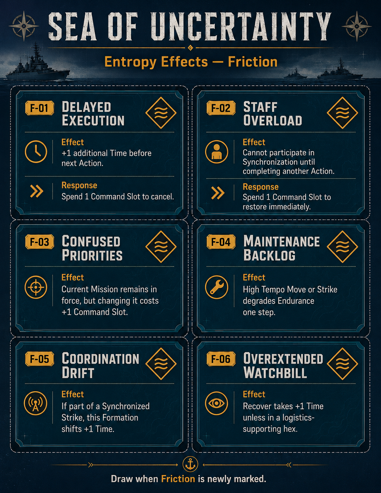
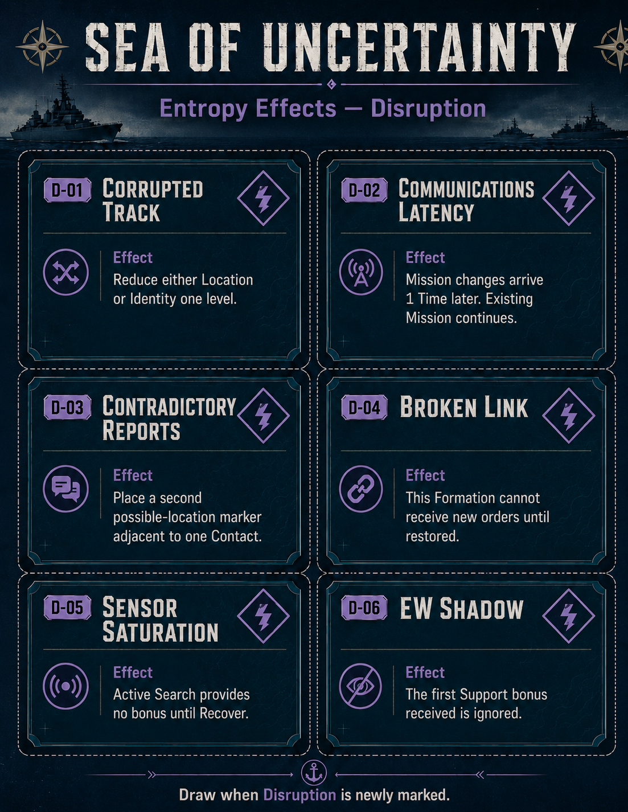
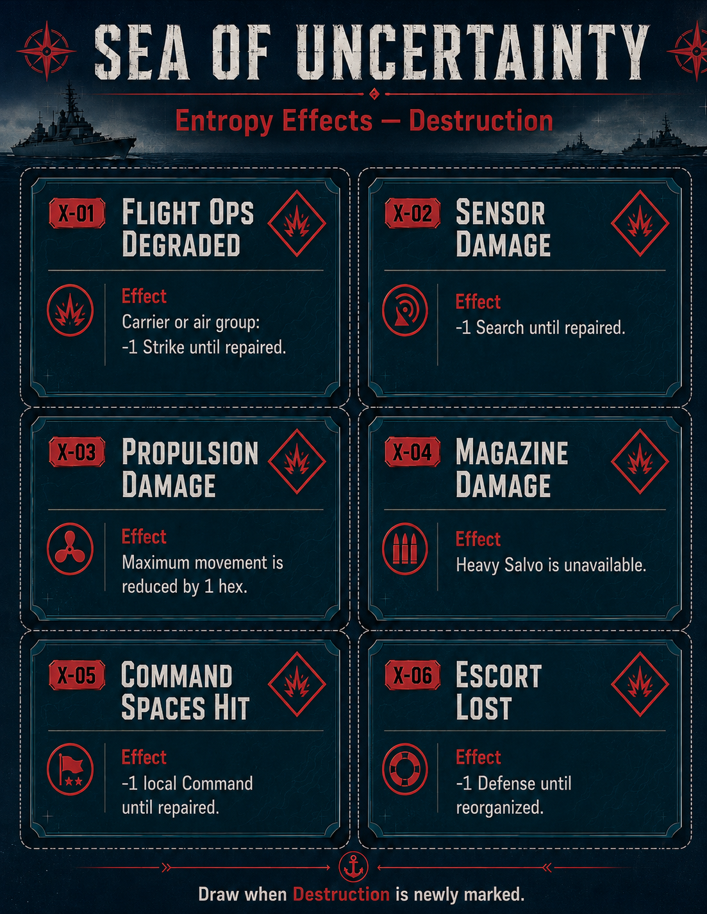
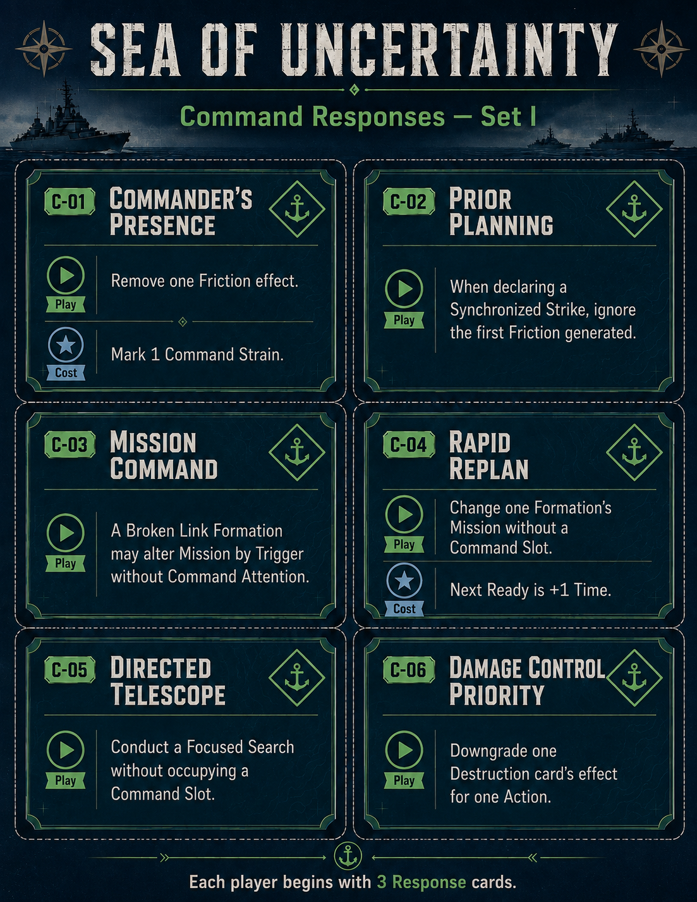
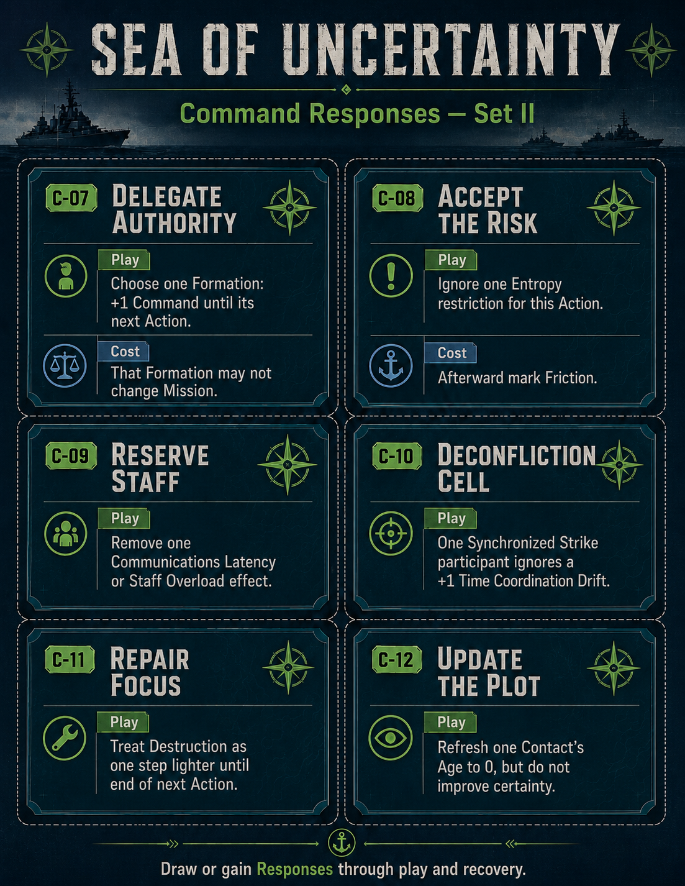

Sea of Uncertainty
An operational naval wargame of command, information, tempo, and combat.
0. Purpose
This is the first deliberately table-playable rules draft with enough detail to support meaningful playtesting. The system is still a prototype, but every section below tells the player what to do and what choices matter.
1. Components
| Component | Use |
|---|---|
| Operational Map | Large sea / littoral hexes. |
| Formation Counters | CSGs, SAGs, submarines, air groups, amphibious and logistics forces. |
| Formation Cards | Ratings, weapons, Endurance, Mission, status. |
| Ready Markers | When each Formation acts next. |
| Contacts | Information picture. |
| Command Slots | Finite HQ attention. |
| Entropy Markers and Effect Cards | Friction / Disruption / Destruction and their specific consequences. |
| Command Response Cards | Limited responses that trade immediate advantages for costs or restrictions. |
| Weapon Expenditure | Major offensive expenditure. |
1.1 Formation Ratings
| Rating | Meaning |
|---|---|
| Move | Mobility. |
| Search | Detection. |
| Signature | Detectability. |
| Strike | Offensive strength. |
| Defense | Survivability / defensive power. |
| ASW | Anti-submarine capability. |
| Command | Initiative / autonomy. |
| Endurance | Staying power. |
2. Operational Clock
No alternating turns. Each Formation has a Ready marker. After acting, its Action Time plus Friction determines its next Ready Time.
2.1 Advance
Move directly to the next occupied Time space.
2.2 Same-Time Order
- Lower Entropy.
- Higher Command.
- 1d6 tie-break.
Then alternate Ready Formations.
3. Standing Missions
Each Formation has Task, Objective, Posture, Trigger. Continue the Mission freely. Immediate retasking normally uses one Command Slot.
4. Action Menu
| Action | Time | Main Choice |
|---|---|---|
| Move | 2 | Cautious / Normal / High Tempo |
| Search | 2 | Passive / Active / Focused |
| Strike | 2 | Target / Salvo / Now or Synchronize |
| Patrol / Screen | 1 | Defensive / Balanced / Aggressive |
| Support | 1–2 | Which friendly action to improve |
| Recover | 2 | Which Entropy source to address |
| Replenish | 3 | Which capability to restore |
| Hold | 1 | Quiet / preserve position |
5. MOVE
| Mode | Distance | Benefit | Cost |
|---|---|---|---|
| Cautious | 1 | −1 Signature | Slow |
| Normal | 2 | Balanced | None |
| High Tempo | 3 | Fast | +1 Signature; mark Friction |
Entering an enemy Patrol/Screen area may trigger Reaction.
6. SEARCH
| Mode | Modifier | Exposure | Command |
|---|---|---|---|
| Passive | +0 | None | None |
| Active | +1 | Become Loud | None |
| Focused | +2 | Normal | 1 Slot |
Select any hex within the mode's range. Search examines the selected hex and its six adjacent hexes (radius 1). Selecting a Contact centers the Search on its last-known hex. A legal Search that finds nothing still spends 2 Time and passes play to the next Ready Formation.
Search = Search Rating + Mode + Target Signature − actual target Range + Support. Hidden target modifiers and exact positions resolve privately.
| Range | Penalty |
|---|---|
| Same hex | 0 |
| 1 | −1 |
| 2 | −2 |
| 3+ | Sensor/scenario dependent |
| Final Value | Success |
|---|---|
| 0− | 5–6 |
| 1–2 | 3–6 |
| 3–4 | 2–6 |
| 5+ | Automatic |
Resolve once for each hidden enemy Formation in the footprint. On success: improve Location, improve Identity, or create a new Low/Unknown Contact.
7. CONTACTS
| Attribute | States |
|---|---|
| Location | Low / Medium / High |
| Identity | Unknown / General / Identified |
| Age | 0 / 1 / 2 / 3+ |
Age 0 Current; 1 Usable; 2 Stale; 3+ Very Stale. At 3+, degrade Location each further Time. Low + 3+ becomes Lost. False Contacts behave like real Contacts until disproven.
8. PATROL / SCREEN
| Posture | Effect | Tradeoff |
|---|---|---|
| Defensive | +1 Defense when reacting | No intercept bonus |
| Balanced | No modifier | Flexible |
| Aggressive | +1 interception Reaction | +1 Signature |
A Screen protects a friendly Formation or objective and may react first to threats entering the protection area.
9. SUPPORT
Support sacrifices independent action to improve another Formation: commonly +1 Strike, +1 Search, +1 Defense, +1 ASW Search, or +1 synchronization.
10. STRIKE
- Choose Contact in range.
- Choose Salvo: Light +0, Standard +1, Heavy +2 and Weapon Expenditure.
- Strike now or synchronize.
- Defender reacts.
11. TARGETING
| Condition | Mod |
|---|---|
| Low Location | −2 |
| Medium | −1 |
| High | 0 |
| Identified | +1 |
| Age 2+ | Optional −1 by scenario scale |
12. REACTION
| Reaction | Benefit | Cost |
|---|---|---|
| Defend | +1 Defense | No offense |
| Evade | +1 Defense; move 1 after | May abandon geometry |
| Counterattack | Light Strike after if capable | No Defense bonus |
| Hold | Preserve position | No modifier |
Normally react once between own Actions. Disrupted cannot Counterattack. Disorganized may only Defend/Evade unless Command Attention is spent.
13. COMBAT
Attack = Strike + Salvo + Targeting + Support + Synchronization − Entropy Effects.
Defense = Defense + Reaction + Screen/Support − Entropy Effects.
| Difference | Band |
|---|---|
| −2− | Poor |
| −1 to +1 | Even |
| +2 to +3 | Favorable |
| +4+ | Dominant |
| Band | 1 | 2–5 | 6 |
|---|---|---|---|
| Poor | No | No | Light |
| Even | No | Light | Heavy |
| Favorable | Light | Heavy | Crippled |
| Dominant | Heavy | Crippled | Destroyed |
13.1 Damage
| State | Effect |
|---|---|
| Light | Temporary impairment. |
| Heavy | Mark Destruction; −1 offense. |
| Crippled | Mark Destruction; reduced move; no Heavy Salvo; limited reaction. |
| Destroyed | Remove / combat ineffective. |
14. SYNCHRONIZED STRIKES
- Spend 1 Command Slot.
- Declare participants and Strike Time.
- All must be Ready by that Time.
- Resolve all before defender fully recovers.
| Sequence | Defense |
|---|---|
| 1st | Normal |
| 2nd | −1 |
| 3rd+ | −2 |
Three or more independent participants mark Friction. Lost target information forces abort, stale targeting, or retask with Command Attention.
15. ENTROPY
| Source | Mark When | Effect |
|---|---|---|
| Friction | High Tempo / sync / extended ops / rapid retask | +1 Time after complex Actions |
| Disruption | EW / cyber / deception / command failure | −1 Search / sync |
| Destruction | Heavy+ damage | −1 offense |
| Sources | Entropy | Cohesion |
|---|---|---|
| 0 | Low | Cohesive |
| 1 | Moderate | Cohesive |
| 2 | High | Disrupted |
| 3 | Critical | Disorganized |
15.1 Entropy Effect Cards
When an Entropy source is newly marked, draw an Effect Card of the matching type and apply its specific rule. The sheets below are the current card reference; use the response printed on a card when one is available. Select any sheet to open it at full size.
{kind=link}

{kind=link}

{kind=link}

16. RECOVER
Spend 2 Time. Remove Friction, or remove Disruption if the cause is no longer active. Destruction needs repair / replenishment / special capability.
17. COMMAND ATTENTION
Baseline: 3 Slots per side. Use for Focused Search, immediate retask, Synchronization, Push Through, Restore Command, or forcing a Disorganized Formation into a complex Action.
17.1 Command Response Cards
Each player begins with three Response Cards. Play a card when its condition applies, resolve its benefit, and then pay any printed cost. Draw or gain further Responses through play and recovery. Select either sheet to open it at full size.
{kind=link}

{kind=link}

18. PUSH THROUGH
If Friction adds +1 Time, assign a free Slot to ignore it. Mark Command Strain. At 2 Strain lose 1 Slot until HQ Recovery.
19. HOLD
1 Time. Stay in place, reduce Signature to Quiet if allowed, preserve Endurance.
20. REPLENISH
3 Time and logistics access. Restore Endurance, Weapon Expenditure, or repairable capability. Normally may only Defend while replenishing.
21. ENDURANCE
| State | Effect |
|---|---|
| Ready | No penalty |
| Extended | High Tempo marks Friction; Recover may take +1 Time |
| Critical | Move −1; no Heavy Salvo; complex Actions mark Friction |
Initial test: degrade one step after three major Actions without Replenishment.
22. DECEPTION
A scenario-capable Formation may use Support to create or reinforce a False Contact. Deception is successful when the enemy physically reallocates movement, search, Command Attention, or weapons.
23. COMMAND DISRUPTION
| Effect | Consequence |
|---|---|
| Degraded HQ | Lose 1 Slot temporarily |
| Delayed Information | Contact update arrives 1 Time later |
| Broken Link | Formation cannot receive new Mission until restored |
24. VICTORY
Scenarios should reward escort, denial, control, preservation, transit, withdrawal, or maintaining combat capability in required areas. Destruction matters as a means to those ends.
24A. Digital MVP Operational Scale
The 3D prototype uses deterministic axial hexes at exactly 20 nautical miles between centers and two hours per Ready-Time. Surface groups, carrier groups, and submarines use 1/2/3-hex Move commitments; air groups use abstract 4/6/8-hex mission radii. Search reaches 8/10/12 hexes for Passive/Active/Focused. Strike range varies by formation and Salvo. Reaction and interception begin at one hex. Land blocks non-air destinations; Littoral adds one Ready-Time. These are approved playtest baselines, not final simulation claims.
25. Sequence of Play
There are no player turns or rounds. The Formation with the earliest Ready Time acts. If both sides have Formations tied at that earliest Time, priority passes to the side that did not act most recently; use lower Entropy, higher Command, then stable formation order within that side. If only one side is Ready, it continues acting.
- Advance Time.
- Update Information.
- Select Ready Formation.
- Choose One Action.
- Choose Posture / Commitment.
- Enemy Reacts.
- Resolve Search / Combat.
- Apply Consequences.
- Check Entropy / Cohesion.
- Schedule Next Action.
26. Worked Example
Blue CSG-71 is Ready at Time 06 with a Medium-Location, General-Identity Contact two hexes west, Age 1.
- Choose Search rather than Strike.
- Use Focused Search: +2 and occupy 1 Command Slot.
- Search 3 + Focused 2 + target Signature 1 − range 2 = 4.
- Success on 2–6; roll 4.
- Improve Location to High.
- Contact becomes High / General / Age 0.
- Search costs 2 Time: CSG Ready at 08.
- Red can act at 07. Blue bought better targeting by giving up tempo.
27. Open Playtest Questions
- Strike Time 2 for all?
- Separate submarine Contact procedure?
- Air groups persistent or mission packages?
- Synchronization penalties too strong?
- Mandatory Age-2 targeting penalty?
- Endurance by action count, elapsed Time, or scenario trigger?